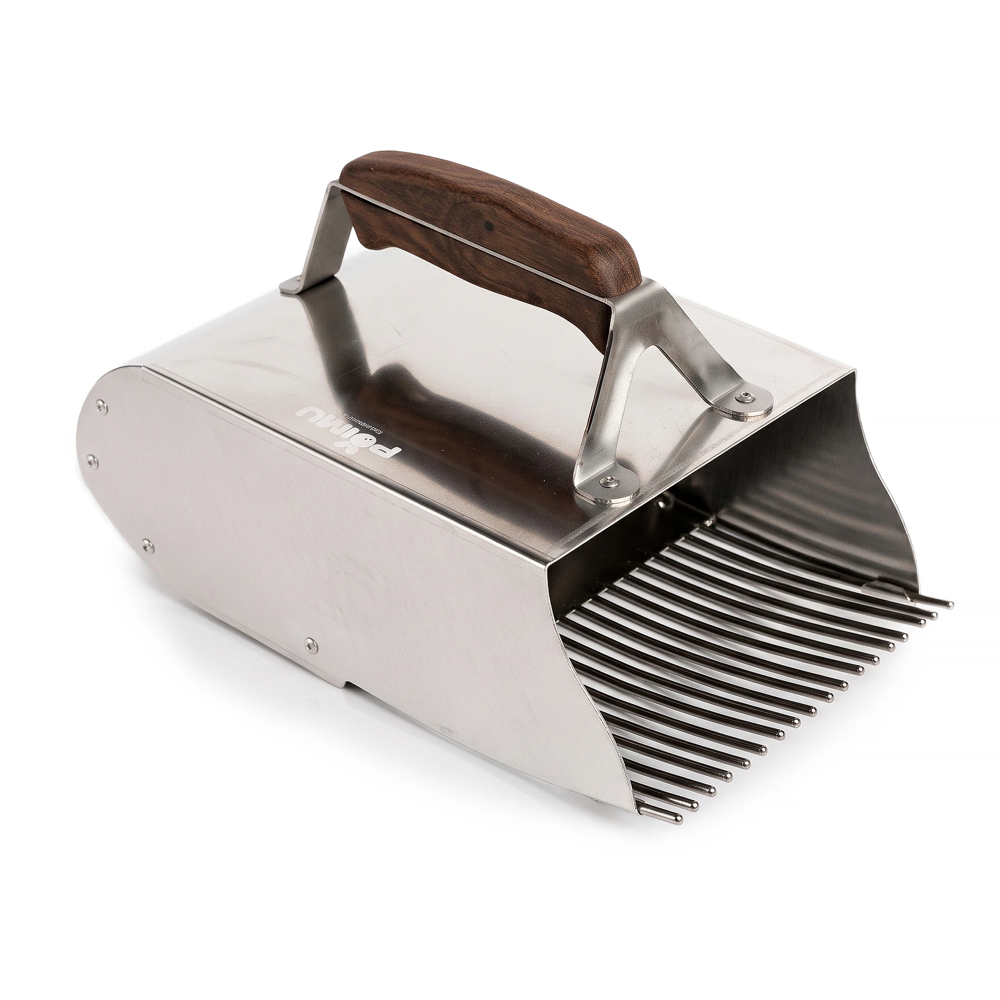
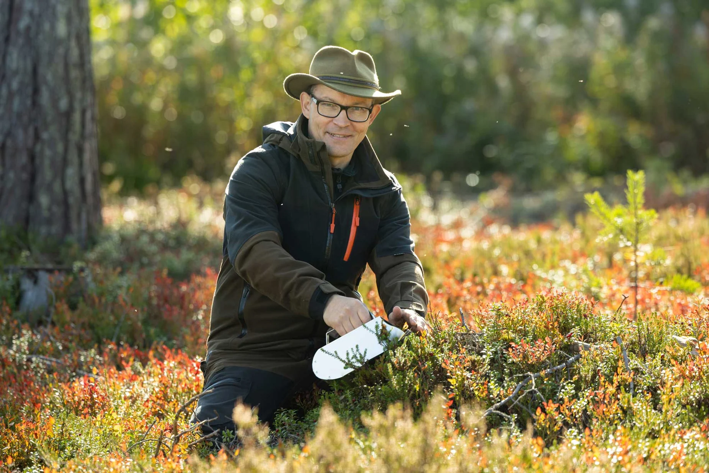
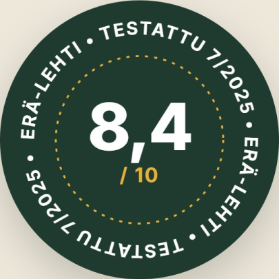
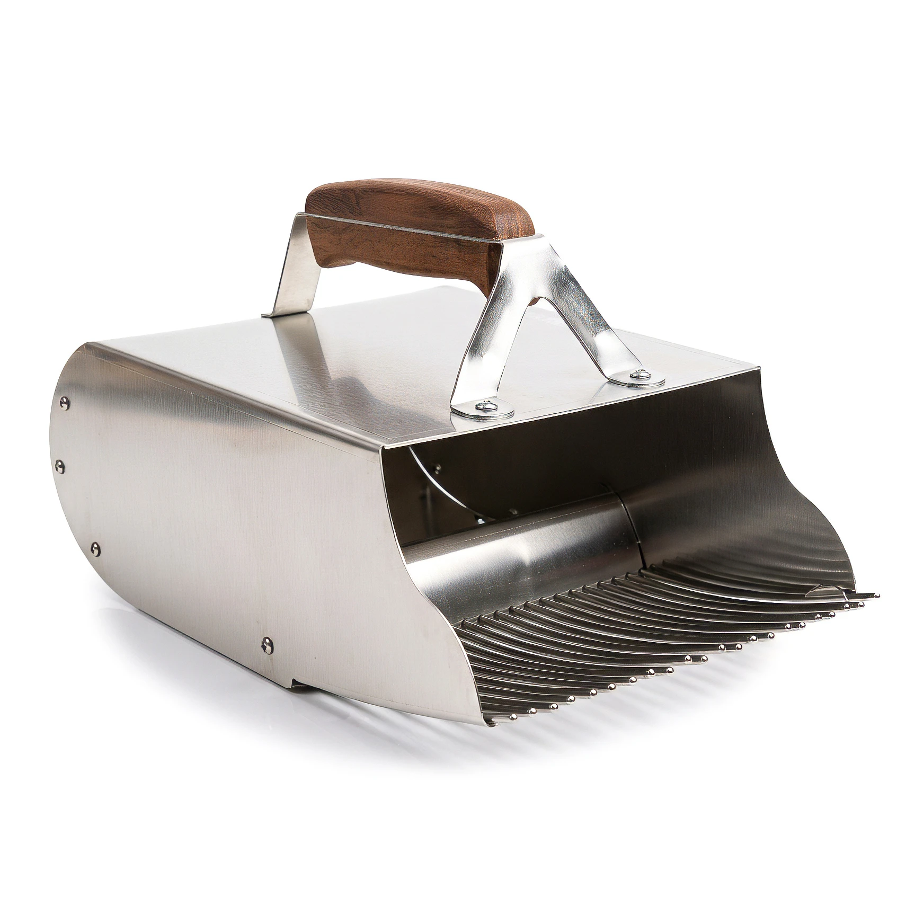
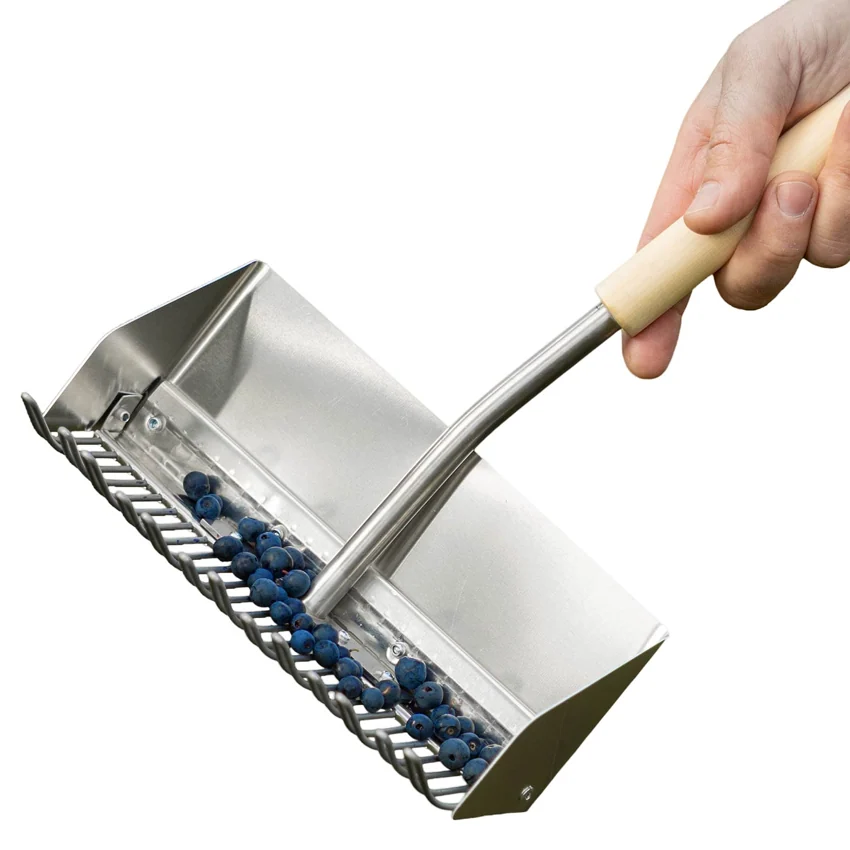
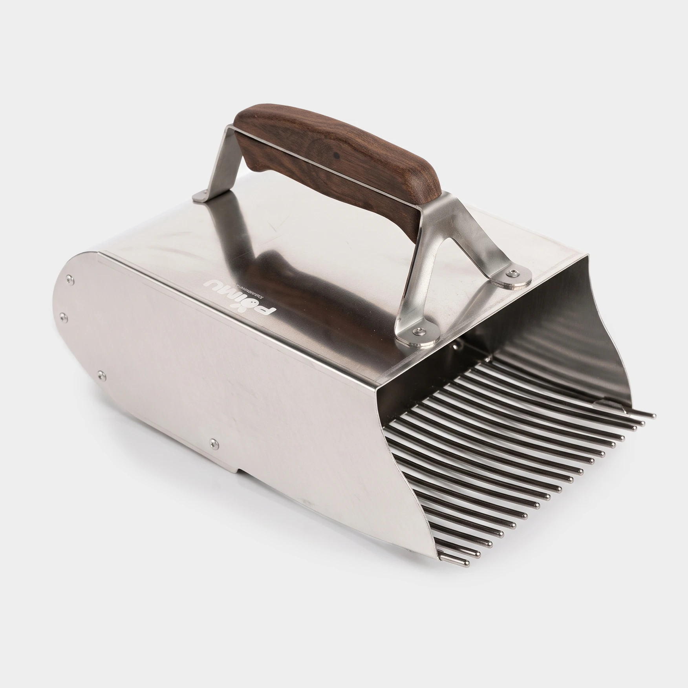
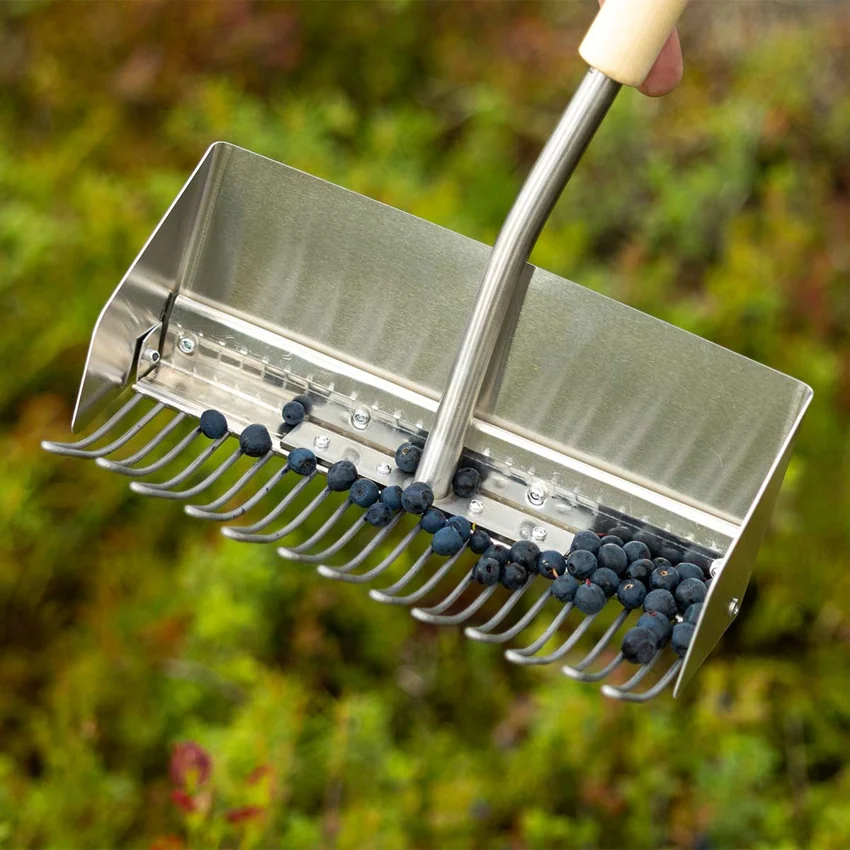
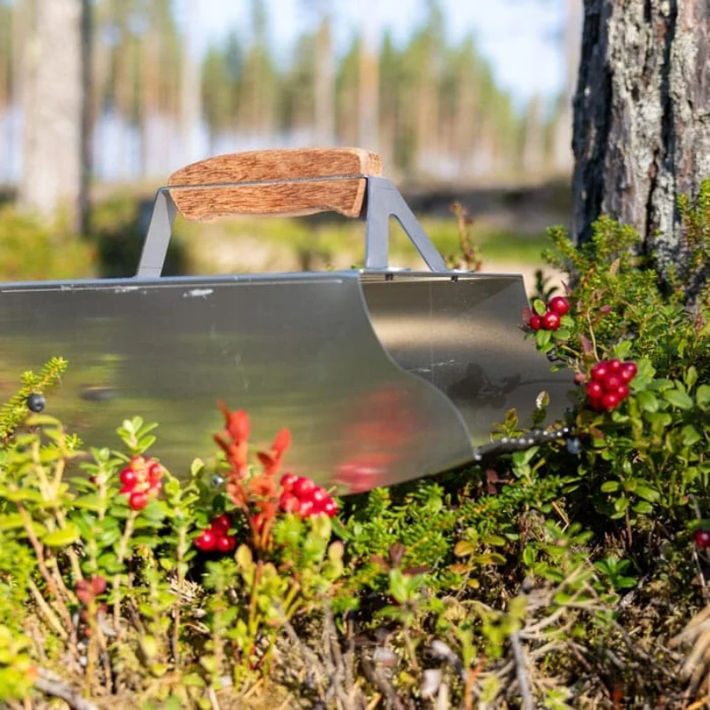
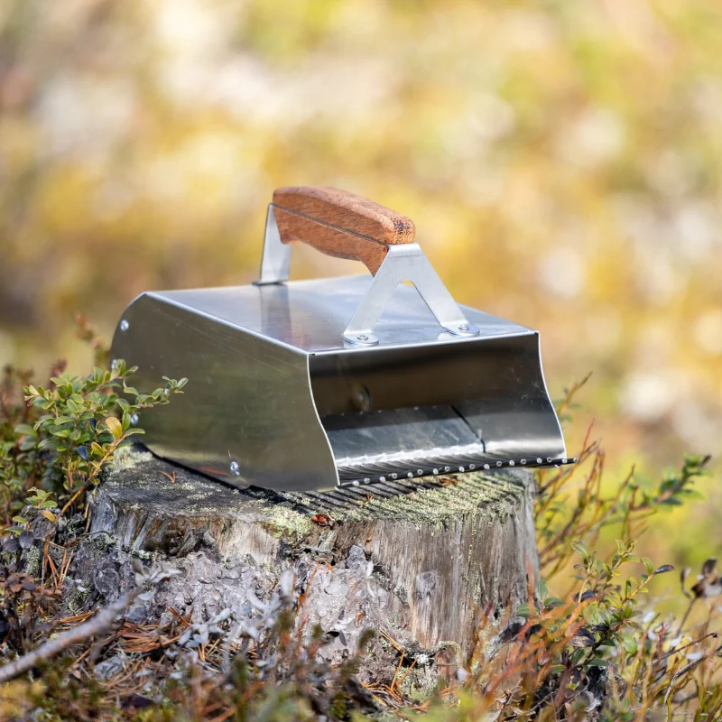
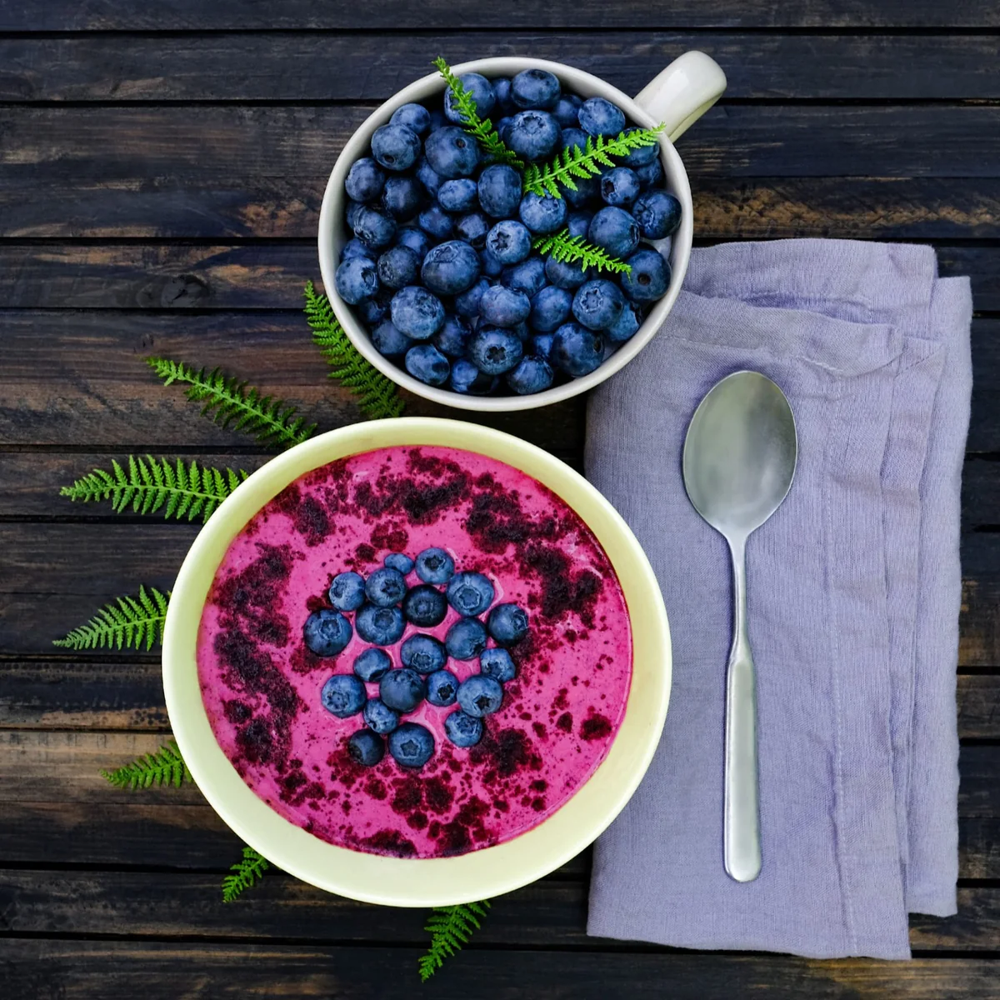

2,5 l83,50 € sis. alv
Kevyt poimuri pienelle kädelle ja lyhyelle marjaretkelle.
- Tilavuus
- 2,5 l
- Paino
- 530 g
- Kopan leveys
- 16 cm

Kuhmolaista käsityötä
Poimu on kehitetty sinulle, joka arvostat puhtaita metsämarjoja ja haluat intohimoisesti marjastaa, säilöä ja nauttia luonnon hedelmistä pitkin vuotta. Sinä ansaitset tähän työhön toimivan ja kestävän työkalun, jota on mukava käyttää.

Alumiinia ja puutaKestävä, kevyt rakenne
5 vuoden takuuRajoitettu valmistajan takuu
Toimitus alk. 9,90 €Manner-Suomeen
Maksuton noutoMyymälästämme Kuhmosta
Poimun valikoima tarjoaa huolella suunniteltuja ja valmistettuja tuotteita, jotka tekevät jokaisesta marjaretkestäsi entistä mukavamman.

2,5 lKevyt poimuri pienelle kädelle ja lyhyelle marjaretkelle.

4,5 lTilava poimuri runsaaseen marjapaikkaan.
 6 l
6 l
Leveä ammattilaisen poimuri tasaiselle kankaalle.

Erillinen astiaVedä marjat varvustosta suoraan keruuastiaan.
Klikkaa tai vie osoitin poimurin hot spotien päälle tutustuaksesi ominaisuuksiin.

Materiaalit ja muotonsa pitävä rakenne: koppa on elintarvikehyväksyttyä alumiinia (EN AW-5754). Toisin kuin monet muovipoimurit, alumiininen runko pitää muotonsa käytössä eikä haurastu auringonvalossa.
Kahvan runko on ruostumatonta terästä ja kädensija öljyttyä jalopuuta.
Piikit on tehty pianolangasta, minkä ansiosta ne pysyvät suorassa kovassakin varvikossa ja irrottavat marjat siististi vähentäen koppaan päätyvän roskan määrää. Katso videolta vinkit Poimun käyttöön – näin keräät ehjiä mustikoita ja teet puhdistustyöstä helpompaa.
Katso käyttövideoPoimun piikit ja kahvan osat ovat vaihdettavissa, joten rikkoutunut osa ei tee poimurista käyttökelvotonta. Valmistaja myöntää koppamallisille Poimuille 5 vuoden rajoitetun takuun.
Tutustu takuuehtoihinKoppa on asetettu kahvaan nähden hieman pystyyn (perä etuosaa alempana) poiminta-asennon helpottamiseksi. Lisäksi rosterikahvan etureunat on pyöristetty, jotta ne eivät paina etusormea pitkillä keruureissuilla.
Poimuriin voi tilata laserkaiverruksen, esimerkiksi nimen tai logon.
Tutustu kaiverrukseenPerinteisten koppamallien (Pieni Poimu 2,5 l, Iso Poimu 4,5 l ja Ronski Poimu 6 l) lisäksi valikoimassa on selkäystävällinen, koivuvartinen Haravapoimuri, jonka saa oikea- tai vasenkätisenä.
Tutustu mallistoon“Reilu koko ja hyvä näppituntuma.”
“Paras poimuri millä olen poiminut”
“Hieno”

Veikko Määtän alumiinipoimurilla kerättiin Kuhmossa marjoja vuosikymmeniä. Kun tekijä jäi eläkkeelle, työkalut ja kaavat siirtyivät Timo Kyllöselle. Niistä syntyi Poimu.
Lue poimun tarinaPoimintatekniikka, marjapaikat ja sadon säilytys samassa oppaassa.
Avaa marjastajan opas
Ennen marjanpoimuri saatettiin tehdä itse. Puusta ja metallista valmistettu työkalu otettiin loppukesällä esiin, ja samalla poimurilla marjastivat vuorollaan lapset, vanhemmat ja isovanhemmat.
Poimu jatkaa suomalaisten metallipoimurien perinnettä. Valmistustavat ovat uudistuneet, mutta tavoite on sama: tehdä käyttöväline, jonka voi aikanaan antaa seuraavalle marjastajalle.
Tutustu mallistoon


Suomessa kypsyy keskimääräisenä satovuonna yhteensä noin 440 miljoonaa kiloa mustikoita ja puolukoita. Tutkimuksen tarkastelemina vuosina 1997–1999 sadosta kerättiin marjalajista riippuen noin 5–10 prosenttia. Lue tutkimus
Kansallinen ravitsemussuositus kannustaa syömään kasviksia, marjoja ja hedelmiä yhteensä 500–800 grammaa päivässä. Noin puolet määrästä voi koota marjoista ja hedelmistä. Kaksi desilitraa metsämarjoja päivässä tarkoittaa vuodessa runsasta 70 litraa. Lue ravitsemussuositus
Poimu kannustaa lähtemään marjametsään ja ottamaan satoa talteen. Poimun sivustolta ja somekanavista löydät vinkkejä poimimiseen, säilömiseen ja metsämarjojen käyttöön.
EU:n osarahoittamalla hankkeella Poimu uudistaa tuotantovälineitä ja parantaa työympäristöä.